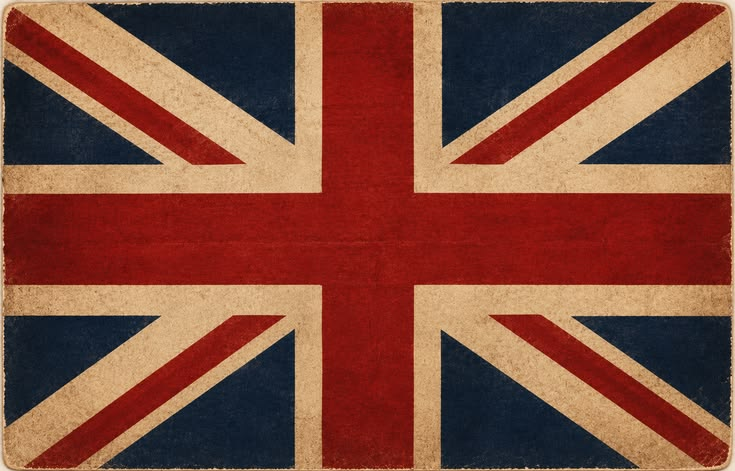

English Collaboration
Observation Round handbag made of cable
About This Collaboration
In English class, we conducted observation activities on Round handbag made of cable and composed observation reports. Each team member provided a unique perspective in observing and analyzing the potential use of cable as the basic material for making Round handbag made of cable.
Team Observation Results

Gita Anjani
Observer & Analyst
How an Old Keyboard Is Transformed into a Wall Clock (Keytime)
Paragraf 1
The rapid surge of electronic waste poses a significant threat to our environment today. Discarded computer keyboards are frequently thrown away as useless scrap despite having components that can be repurposed. Upcycling these parts into Keytime, a unique handcrafted wall clock, offers a creative solution. This process proves that modern technological waste can be successfully converted into a high-value product.
Paragraf 2
The production starts by dismantling a broken keyboard into smaller pieces. The plastic keycaps bearing numbers 1 through 12 are detached from the internal circuit board. These selected keys then undergo thorough cleaning to eliminate accumulated grime. Consequently, their purpose shifts entirely; they stop serving as typing tools and transform into distinctive number indicators for a timepiece.
Paragraf 3
Next, the pristine keycaps are assembled onto a circular wooden base equipped with a functional clock mechanism. Workers carefully align and glue each key in a chronological circle to replicate a standard clock face. This geometric arrangement creates a sleek, industrial aesthetic. Once the adhesive cures and the clock hands are securely mounted, the separate parts become a unified product.
Paragraf 4
Ultimately, a discarded keyboard becomes an attractive wall clock that balances utility with artistic design. The resulting item functions perfectly for timekeeping while upgrading room decor. This initiative actively diverts electronic waste from landfills and promotes sustainable material reuse. Transforming old technology into art is a practical step toward environmental preservation.

Haqqi Ilmaniar Ahwa
Contributor
How an Old Keyboard Is Transformed into a Clock (Keyboard Time)
Paragraf 1
Electronic waste is one of the environmental problems caused by the rapid development of technology. Old computer keyboards are often discarded when they are damaged or no longer needed. However, these keyboards contain materials that can still be reused. One creative way to manage this waste is by transforming old keyboard components into a decorative clock called Keyboard Time (KeyTime). This transformation shows how electronic waste can become a useful and valuable product.
Paragraf 2
The transformation begins when an unused keyboard is separated into individual components. Its plastic keys are removed from the main keyboard structure and separated from other electronic parts. The keys are then cleaned to remove dust and dirt. The materials needed for the clock are also prepared, including a clock mechanism and a supporting base. At this stage, the keyboard keys are no longer used for typing but become decorative materials for a new product.
Paragraf 3
The cleaned keyboard keys are arranged and attached to the clock base. A clock mechanism, including the clock hands, is installed so that the product can function properly. Different letters, numbers, and symbols create a unique technological appearance. Once all components are firmly attached and the clock mechanism is properly installed, the materials become one complete product called Keyboard Time (KeyTime).
Paragraf 4
As a result, an old computer keyboard is transformed into a decorative and functional clock called Keyboard Time (KeyTime). The product can be used to show the time while also serving as a unique decoration for a desk, bedroom, or workspace. This transformation reduces electronic waste and encourages the reuse of available materials. Therefore, recycling old computer keyboards into creative products is one way to support a more sustainable environment.

Ulfa Oktafiana Ashfa
Contributor
How a Used Keyboard Is Transformed into a Wall Clock
Paragraf 1
Electronic waste is one of the environmental problems caused by the rapid development of technology. Used computer keyboards are often discarded when they are damaged or no longer needed. However, some parts of these keyboards can still be reused to create a useful and decorative product. One creative way to recycle an old keyboard is by transforming it into a unique wall clock. This transformation demonstrates how unused electronic components can be given a new purpose and become a valuable product.
Paragraf 2
The transformation begins with the preparation of a used computer keyboard and other necessary materials. The keyboard keys are carefully separated from the main structure and selected for reuse. After that, the keys are cleaned to remove dust and dirt. The electronic circuit board is also prepared to become the central decorative part of the clock. These components are then arranged according to their new functions, changing from ordinary keyboard parts into materials for a creative wall clock.
Paragraf 3
The selected keyboard keys are arranged around a circular base to form the outer part of the clock. Some keys are used to represent the numbers on the clock, from one to twelve, while other keys create a decorative border. The electronic circuit board is placed in the center to give the clock a unique technological appearance. Next, the clock mechanism and hands are attached to complete its main function. Once all the components are properly arranged and attached, the unused keyboard is transformed into a complete and distinctive wall clock.
Paragraf 4
As a result, an old computer keyboard is transformed into a unique wall clock that has both functional and aesthetic value. The clock can be used to tell time while also serving as an attractive decoration. This creative project helps reduce electronic waste by reusing materials that would otherwise be discarded. Furthermore, it encourages creativity, innovation, and environmental awareness. Therefore, transforming a used keyboard into a wall clock is a meaningful example of recycling that supports a more sustainable environment.